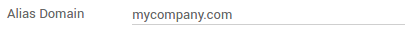

When is it needed
Using your own email servers is required to send and receive messages in Odoo Community or Enterprise. Odoo Online embeds an out-of-box email solution that works straight away. However you can still use your own email servers with the online edition. Some insights are provided here below.
How to set it up
As a system admin, go to and check External Email Servers (watch out: this checkbox only shows up after Odoo 10). Then, go through the following steps.
Note
Office 365 email servers don't allow easiliy to send external emails from hosts like Odoo. Refer to the Office 365 documentation to make it working.
Set an outgoing email server for outbound messages
You need the SMTP data of your email provider (Gmail, Outlook, Yahoo, AOL, etc.) as well as your admin credentials. Once all the information has been filled out, click on Test Connection.

Set an incoming email server for inbound messages
Fill out the form according to your email provider’s settings. Leave the Actions to Perform on Incoming Mails blank. Once all the information has been filled out, click on TEST & CONFIRM.

Note
By default inbound messages are fetched every 5 minutes. You can change this value in developer mode. Go to and look for Mail: Fetchmail Service.
Set the domain name
Enter the domain name of your email servers (e.g. mycompany.com) in General Settings.
Create a catchall address
When a contact replies to an email sent from Odoo, the reply-to address is a generic address used to route the reply to the right discussion thread in Odoo (opportunity, order, task, etc.) and to the inbox of all its followers. By default this address is "catchall@" but it can be changed.
Create a catchall address in your email server settings. We advise you to use "catchall@" so that everything works out straight away. If you want to use another alias, you have extra steps in Odoo:
- Activate the developer mode from your Settings Dashboard.
- Refresh your screen. Then go to and enter your custom catchall alias in mail.catchall.alias.
Note
You can edit the email alias used for bounced messages the same way.
How to use my own email servers with Odoo Online
Odoo Online comes up with an embedded and ready-to-use email solution with @yourcompany.odoo.com as domain. We recommend to keep this default setup as it is really convenient.
Nevertheless you can still use your own email servers if you want to manage your email server's reputation (blacklisting, etc). The configuration for both incoming and outgoing mail servers is given here above.
However when it comes to incoming messages, we don't recommend to exclusively use your own email server. Indeed, Odoo Online is fetching incoming messages from the email server once every hour only. To receive emails in real time, you should rather use a catchall redirection (your server -> Odoo server). To do so:
- Create a catchall address in your email server settings (e.g. catchall).
- Still from such settings, set a redirection from this catchall address to Odoo's one: catchall@yourdomain.ext -> catchall@yourcompany.odoo.com.
- In Odoo check External Email Servers in and enter your email domain name (i.e. yourdomain.ext).
- No need to set up an incoming email server in such a case.
How to be SPF-compliant when using external email servers in Odoo
Sender Policy Framework (SPF) is an email-validation system that checks that incoming mail from a domain comes from a host authorized by that domain's administrator. Such a security system is used in most email servers. If you don't comply with it, your emails sent from Odoo will be likely flagged as spam.
To be SPF-compliant, you need to authorize Odoo as a sending host in your domain name settings:
- Sign in to your domain’s account at your domain host.
- Locate the page for updating your domain’s DNS records.
- If no TXT record is set, create one with following definition: v=spf1 include:_spf.odoo.com ~all
In case a TXT record is already set, add "include:_spf.odoo.com".
e.g. for a Gmail server it should be:
v=spf1 include:_spf.odoo.com include:_spf.google.com ~all
Find here the exact procedure to create or modify TXT records in your own domain registrar.
Your new SPF record can take up to 48 hours to go into effect, but this usually happens more quickly.
Note
Adding more than one SPF record for a domain can cause problems with mail delivery and spam classification. Instead, we recommend using only one SPF record by modifying it to authorize Odoo.
How to choose between Odoo and my traditional email box
Odoo Discuss is a perfect tool to send and read messages related to business documents. However it doesn't aim to replace a full-featured email solution (Gmail, Outlook, Yahoo, AOL, etc.). We recommend to take the most out of both systems without mingling them: What is related to Odoo business objects or applications goes into Odoo; What is not can be managed into your external email box.
To do so, create specific email aliases to use in Odoo (to generate leads or opportunities, helpdesk tickets, etc.). If you take an email alias already used for messaging outside of Odoo, incoming messages will land into both systems. This will negatively impact your productivity.